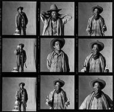
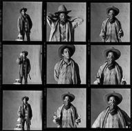

장 미쉘 바스키아의 탄생
장 미쉘 바스키아는 1960년 12월 22일 뉴욕 브루클린의 파크슬로프에서 태어났습니다. 파크슬로프는 뉴욕 중산층이 대다수인 안락한 주거지역으로, 브라운스톤 주택이 들어선 아름다운 경관을 가졌다고 합니다. 앤 해서웨이 주연의 영화 ‘인턴’의 배경이기도 합니다. 영어와 스페인어를 자연스럽게 구사하던 어머니 마틸드의 가르침과 아이티 출신인 아버지 제라드의 영향으로 바스키아는 프랑스어, 스페인어, 영어까지 3개의 언어에 유창했습니다. 이렇게 어린시절부터 다양한 언어에 익숙했던 바스키아는 언어를 자연스럽게 구사할 뿐 아니라 문화까지도 자연스럽게 받아들일 수 있었습니다. 그가 부모님에게 물려받은 것은 언어만이 아니었습니다. 미술관에 관심이 많았던 어머니는 어린 바스키아를 미술관에 종종 데려갔었는데, 바스키아는 특히 뉴욕 현대 미술관에 걸려있었던 피카소의 작품에 깊이 빠졌다고 합니다. 이런 작품을 어린시절부터 접하며 많은 영감을 받고, 또 예술의 영향력을 자연스럽게 익힐 수 있었다고 하네요. 7살이 되던 해 바스키아는 끔찍한 사고를 당하게 됩니다. 길에서 놀다가 차에 치여 팔이 부러지고 내장을 심하게 다쳐 큰 수술까지 하게 되는데요. 병원에 입원한 바스키아에게 어머니는 그레이의 해부학 책을 선물합니다. 왠 해부학 책이냐고요? 긴 회복기간동안 몸에서 어떤 일이 일어나고 있는지, 어린 바스키아의 이해를 돕기 위한 선물이었습니다. 이 해부학 도서는 바스키아에게 많은 영향을 주었고, 이후 그의 작품에서도 뼈와 내장 등 해부학적인 요소를 자주 찾아볼 수 있습니다. 그러나 같은해, 부모님이 이혼하게 되며 어머니가 가족을 떠나게 됩니다. 이는 어린 바스키아에게 있어서 삶의 롤모델을 상실하는 중대한 사건이었습니다. 그러나 이후 자라면서 종종 어머니를 찾아가 자신이 그린 작품을 보여주고 계속해서 관계를 유지하기 위해 노력하는 모습을 보였다고 하네요. 이처럼 어린 바스키아는 자연스럽게 주변을 보고, 익히고, 그리기 시작했습니다. 친구와 함께 아동용 책을 만들기도 하고 티비에서 본 만화 캐릭터들을 따라 그리면서 만화가의 꿈을 가진 시절도 있었습니다. 비록 스스로 어린시절의 그림시절은 형편없었다. 라고 평가했지만요.
학교에서 최고의 아티스트가 되고 싶었지만 그림대회에서 멋진 스파이더맨을 그린 친구에게 져버렸다고 합니다.
그런 그가 어떻게 미술계의 슈퍼스타가 되었는지
함께 알아볼까요?
뉴욕의 거리, 그리고 SAMO
여러분, 혹시 골목 담벼락에서 작은 그림이나 글씨를 본 적이 있으신가요? 만약 그러시다면 ‘낙서금지’라는 경고문도 한 번은 함께 보셨을 법도 한데요. 건물 벽 등에 스프레이로 그려진 낙서 같은 문자나 그림을 우리는 익히 ‘그래피티’라고 알고 있죠. ‘스프레이캔아트’ 또는 ‘스트리트아트’라고 하죠. 1970년대 후반, 바스키아가 자란 뉴욕은 바로 이 낙서로 뒤덮여 골머리를 앓고 있었습니다. 청소년들은 어울려다니며 스프레이 캔으로 거리에 낙서를 하기 시작했습니다. 이 낙서들은 반항적인 내용, 자신을 나타내는 상징이 특징으로 이들을 격렬한 에너지가 느껴졌는데요. 낙서를 하던 청소년들을 주로 지하철을 캔버스로 선택했고, 이 선택을 정말 놀랍게도 효과적이었어요. 자신을 나타내는 사인이나 메세지를 적은 지하철이 도시 반대편에 도착하면, 그곳의 또 다른 낙서화가들이 그것을 보고 다시 응답을 보내기도 했습니다. 뉴욕시는 이를 예술로 인정하지 않았고 기물파손이나 범죄로 여겨 규제했지만 그래피티의 속도를 막기는 힘들었다고 합니다. 이는 일종의 인종을 초월한 예술적 움직임이었으며, 권위에 대한 적극적인 반항이었습니다. 엄격한 규제에도 수그러들 기미가 없자, 당시 뉴욕시장은 ‘거리가 아니라 사회 안에서 뭔가 하여 이름을 남기세요’라는 슬로건을 직접 홍보하기까지 했는데요. 하지만 이런 노력이 무색하게도 거리의 그래피티는 아티스트에게 부와 명성을 가져다 주기 시작했습니다. 많은 갤러리들이 이 새로운 물결에 주목하기 시작했기 때문입니다. 10대의 어린 청소년들이 갤러리에서 전시를 하고 작품을 판매할 기회도 얻게 되었습니다. 타키 183, 키스헤링, 케니샤프등 많은 아티스트가 그래피티를 통해 주목받았습니다. 그리고 바로 이시기, 자신을 세이모라고 주장하는 미스터리한 인물이 남긴 낙서가 뉴욕전역을 휩쓸었습니다. 당시 힙스터들이 다녔던 뉴욕의 클럽부터 예술작품을 전시하는 갤러리 벽까지, 여기저기에서 세이모가 다녀간 흔적을 찾을 수 있었는데요.
‘인생이라는 이름의 환상, 그 끝은 세이모’라고 물질주의 사회를 날카롭게 비판하면서도 시적감수성을 동시에 갖춘 세이모는 사람들의 이목을 끌기에 충분했었죠. 이 세이모 뒤에는 바로 바스키아와 그의 친구 알 디아즈가 있었습니다. 세이모는 ’Same old Shit’의 약자인데 ‘흔해빠진 낡은 것’ 이라는 뜻입니다. 이 둘을 세이모라는 사인을 만들어 거리 곳곳에 남겼습니다. 그리고 점차 유명해져서 둘은 일약 스타가 되죠. 수많은 언론사가 그들을 취재하고 싶어했지만 쉬운 일이 아니었습니다. 그럼에도 최초로 취재에 성공한 신문사 ‘더빌리즈 보이즈’는 바스키아와 알 디아즈에게 직접들을 세이모의 탄생과 그들의 목적을 기사에 담았습니다. 바스키아는 이 인터뷰에서 이렇게 말했습니다. “사람들은 좀 더 정신적인 가치를 중요하게 여기며 살아야 합니다. 하지만 제가 하루종일 길거리에서 서서 훈수를 둘 수는 없으니 벽에 글을 쓰는 거에요.” 라구요. 하지만 이 인터뷰이후 디아즈와 바스키아는 입장차이로 갈등을 겪어 헤어졌습니다. 디아즈는 세이모가 계속 익명으로 남기 원했고, 바스키아는 유명세를 원했기 때문입니다. 바스키아는 “samo is dead”라는 낙서를 소호 곳곳에 쓰기 시작했습니다. 아쉽게도 이 시기에 세이모 낙서는 모두 지워지고 지금은 사진으로만 남아있다고 합니다. 이처럼 바스키아는 어린나이로 이미 뉴욕미술계의 화제의 인물이 되어있었습니다. 소호와 이스트빌리지, 백인이 주류였던 예술계에서 대중에게 주목받기 위해 어떤 전략을 택해야하는지 너무나도 잘 알고 있었던 것이죠. 세이모의 마지막을 사람들을 다양한 방식으로 추모했습니다. 뉴욕출신 세계적 그래피티 아티스트 키스해링은 클럽57에서 특별한 추모식을 열고, 시를 발표하기도 했습니다. 그즈음 아티스트들이 드나들던 유명한 머드클럽에서 바스키아는 큐레이터인 디에고 코르테지라는 인물을 만나게 되는데요. 그의 소개로 대규모전시, 더 타임스퀘어 쇼에 참여하면서 아티스트로서의 경력을 시작하게 됩니다.
뉴욕의 핫플레이스, 클럽57과 Mudd club
바스키아는 1987년에 집을 떠나 이리저리 떠돌아다니며 다양한 사람들과 만나기 시작했습니다. 고등학교는 이미 자퇴한 상태였고, 매일 밤 파티를 다니며 젊은 아티스트들과 어울리곤 했죠. 종종 그들의 집에서 신세를 질 때가 많았는데, 냉장고든 테이블이든 가리지 않고 집 여기저기 낙서를 하는 습관 때문에 마찰을 빚는 일도 잦았다고 하네요. 그들이 어울렸던 클럽이 어디냐고요? 뉴욕 이스트빌리지에서 가장 힙한 클럽에는 클럽57, 머드클럽이 있었습니다. 요즘 클럽과는 다르게 당시 클럽은 매일밤 새로운 아티스트가 새로운 작품을 발표하는 장소이기도 했다고 합니다. 이런 행동은 당시 시대적으로 큰 의미가 있었습니다. 대중들은 멀게만 느낄 수 밖에 없었던 상류사회의 갤러리와 미술관에서만 전시하던 예술, 공연, 그리고 영화에 새로운 도전장을 던지고 있었던거죠. 사교활동과 함께 이루어지는 다양한 장르의 혼합예술은 뉴욕예술계의 필수 요소가 되었습니다. 젊은 아티스트들은 그 안에서 다양한 가치에 대한 의문점을 예술이라는 형태로 토론하곤 했습니다. 케니샤프나 키스해링같은 작가들도 이런 클럽을 다니면서 당시 트렌드였던 힙합과 펑크, 패션, 대중문화와 거리문화를 적극적으로 보여줬다고 합니다. 팝 아트의 살아있는 전설, 케니샤프는 클럽57에서 있었던 일에 대해서 일단 재미있는 게 가장 우선이었다고 회상하기도 했습니다. 이처럼 젊은 예술가들이 자유롭게 놀고, 이야기하고, 어울리면서 새로운 뉴욕예술계의 흐름이 형성되었습니다. 바스키아는 머드클럽에서 디에고 코르테즈라는 큐레이터를 만났습니다. 코르테즈는 바스키아에게 클럽에 다니는 젊은 아티스트들을 많이 소개해주었고, 그림을 그리라고 격려하기도 했습니다. 더 타임즈 스퀘어쇼에 참여해 아티스트 경력을 시작하게 도와주었고, 이후 자신이 기획한 뉴욕, 뉴웨이브 전시를 통해 바스키아를 소개했는데, 이 전시로 인해 바스키아는 많은 관심을 받게되고 한 걸음 더 올라선 중요한 기회가 됐습니다. 특히 머드클럽은 클라스노미, 이기팝, 데이빗보위, 시드피셔스등 당대 유명인사들이 출몰하는 핫플레이스였는데요 이른바 클럽이 예술계의 중심지였던 셈이죠. 여기서 바스키아는 화려하게 꾸민 헤어, 패션스타일과 특이한 춤을 추면서 이목을 끌었다고 합니다. 이곳에서 바스키아와 친해진 사람중에는 바로 가수 마돈나가 있었다고 하는데요. 당시는 무명이었던 마돈나와 바스키아는 깊은 우정을 나누었고, 바스키아는 사람들에게 “이 사람은 마돈나. 곧 유명한 스타가 될 거에요.”라고 마돈나를 소개하곤 했습니다. 1980년대 에이즈가 유행하기 전까지 이렇게 클럽에 모인 젊은 아티스트들은 다양한 공연과 전시, 파티를 기획하면서 예술계를 주도했습니다. 그들이 선보인 전대미문의 종합예술은 주류 미술관의 주목까지 이끌어냈고, 나아가 이스트빌리지 나이트클럽 셀레브리티로 큰 명성을 얻기도 했습니다. 이후 비평가들은 클럽57과 머드클럽이 아니였다면 그 누구도 키스해링, 케니샤프, 장 미쉘 바스키아같은 세계적인 예술가를 키워낼 수 없었을 거라고 이야기 하곤 했습니다.

앤디워홀과 바스키아
여러분, 앤디워홀이라는 이름을 들어보신 적이 있을 것 같아요. 팝아트의 선구자이자 현대미술의 아이콘으로 20세기 가장 영향력 있는 아티스트 중 한명으로 평가받고 있는데요. 앤디워홀을 처음 들으셨더라도 캠벨수프와 마릴린먼로의 얼굴을 활용한 작품은 한 번씩은 보신적이 있으실 것 같아요. 바스키아가 집을 나와 아티스트들과 어울려 파티를 다니던 시절을 기억하시나요? 그 때 바스키아는 엽서와 티셔츠에 그림을 그려서 판 돈으로 생계를 유지하곤 했습니다. 바로 그 시절, 앤디워홀과 바스키아의 우연한 첫 만남이 있었다고 합니다. 어느날 앤디워홀이 유명 미술관의 큐레이터와 뉴욕 소호의 한 식당에서 식사를 하고있었을때, 바스키아가 자신이 그린 엽서를 들고 접근했다고 합니다. 워홀은 젊은 아티스트들을 응원하는 의미로 한장 사주었지만, 큐레이터는 사주지 않았죠. 하지만 결국 그도 바스키아의 후원자가 되었습니다. 앤디워홀은 당시 젊은 아티스트들에게 우상과도 같은 존재였습니다. 바스키아는 워홀과 친분이 있는 사람들을 만나며 적극적으로 다가가기 시작했는데요, 그러던중 1982년에 드디어 유명 갤러리스트의 소개로 그들의 운명적인 만남이 시작되었습니다. 바스키아는 워홀과 인사를 나눈뒤 작업실로 돌아가 바로 그의 초상화를 그려 보냈는데, 헤어진지 두시간도 안 된 시간이었다고 하네요. 그렇다면 워홀의 바스키아에 대한 첫인상은 어땠을까요? 사실 처음에는 그저그런 젊은 아티스트로 ‘나를 귀찮게 하는 유형의 아이’ 라고 일기에 쓰기도 했습니다. 하지만 바스키아를 정식으로 소개받은 날, 워홀은 바스키아가 가진 예술계 스타로서의 능력을 알아보게 됩니다. 이후 둘은 계속해서 연락을 주고받으며 예술적 동지로서 많은 교감을 나누고 친구로서 일상도 함께하게 됩니다. 바스키아는 워홀과 함께 작업하며 서로의 그림에 영감을 받아 자유롭게 더 그리곤 했는데요, 이들의 작업을 본 키스해링은 그림으로 대화를 한다고 까지 이야기를 했으니, 서로의 예술세게에 얼마나 큰 영향을 주었는지 알 수 있습니다.
 

뮤직, 바스키아 영감의 원천
바스키아는 생전에 3천장이상의 LP를 수집할 만큼 음악을 사랑했다고 합니다. 음악 취향도 한 장르에 한정되지 않고 엄청나게 다양했죠. 블루스, 클래식, 소울, 디스코, 심지어는 루지애나의 흑인들이 연주했던 댄스음악인 자이데코까지 장르가 다양했습니다. 바흐, 베토벤의 음악 뿐만 아니라 찰리파커, 마일스 데이비스, 데이비드 보위의 로우와 히어로즈 등 그가 그림을 그릴 때 끊임없이 반복해서 듣는 페이버릿 플레이리스트가 많이 있었다고 하네요. 하루종일 같은 곡을 들어서 주변 친구들이 힘들어할때도 있었다고 합니다. 이정도면 그의 음악 사랑이 얼마나 특별했는지 느껴지시나요? 바스키아는 음악에 대한 열정을 다양한 활동과 작품안에 쏟아냈는데요. 4인조 뮤직밴드 ‘그레이’를 결성해 활동하기도 합니다. 바스키아가 어린시절 교통사고를 당한 후 어머니에게 그레이의 해부학 책을 선물받았던것 기억하나요? 바로 그 그레이의 해부학으로부터 밴드 이름을 따온 거라고 하네요. 머드클럽에서 직접 디제잉도 하고 힙합 아티스트 라멜즈와 케이로비레브란 힙합의 정석이 된 앨범, 비트 바벨커버를 디자인하기도 했습니다. 여러분, 혹시 재즈중에 비밥이라는 스타일을 아시나요? 흑인 재즈 연주자들을 중심으로 발전한 스타일인데, 바스키아는 그 비밥의 선구자이자 전설적인 색소폰 연주자인 찰리파커를 다양한 작품속에서 묘사하곤 했습니다. 비밥은 전통 재즈에서 벗어나 즉흥적인 성격을 띄는 음악인데 이런 스타일, 그리고 당시 흑인재즈 연주자들의 사회적위치가 자신의 작품이나 인생과 비슷하다고 생각해서 바스키아는 특히 비밥을 좋아했다고 합니다. 실제로 현재까지도 전세계 많은이의 사랑의 받으며 여러 아티스트들에게 영향을 미치는 바스키아처럼 현재 재즈 음악 또한 대부분이 비밥의 후손이라고 말할 수 있을 정도로 비밥의 영향을 많이 받았다고 하네요. 또 바스키아 하면 떠오르는 음악이 하나 있죠. 바로 힙합입니다. 힙합은 1970년대 후반 뉴욕 빈민가에 거주하는 흑인, 그리고 스페인계 청소년들에게서부터 시작되었습니다. 랩, 디제잉, 그래피티, 브레이크댄스가 힙합의 요소로써 자리했죠. 지하철이나 거리의 벽에 사회적 메세지를 남기는 그래피티, 자신의 생각을 이야기로 전달하는 랩, 빠른 비트에 맞춰 춤을 추는 브레이크 댄스, 그리고 LP레코드판을 자유롭게 움직여 즉흥적으로 새로운 음악을 만드는 디제잉. 이런 4가지 표현 양식으로 나타난 힙합은 사회 비판적인 정신을 담은 자유롭고 새로운 장르로 나타났습니다. 현재는 더 나아가 미국을 대표하는 대중음악이 되고 패션, 댄스, 그리고 생각까지 모두 아우르는 하나의 장르로 자리잡았는데요. 이 힙합은 바스키아의 작품과 놀랄 정도로 닮은 점이 많다고 합니다. 우선 바스키아는 세이모 그래피티 활동으로 뉴욕 거리 곳곳에 사회를 향한 저항의 메세지를 남겼습니다. 당시 가혹했던 인종차별을 극복하고 최고의 자리에 오른 흑인 운동선수, 뮤지션들에 대한 존경의 표시로 작품안에 왕관 이미지를 그려 넣기도 했는데요. 이 왕관은 힙합에서 자주외치는 respect정신이 담겼다고 볼 수 있겠죠? 또 디제잉의 기법 중 하나인 샘플링은 기존에 있던 곡의 일부분을 섞어서 재해석해 새로운 음악으로 만들어내는 방법인데요. 바스키아의 작품또한 자유롭게 쓴 다양한 텍스트와 이미지를 결합해 새로운 작품을 만들어 냅니다. 힙합가사에도 많이 등장하는 바스키아는 현재 활동하는 칸예웨스트, 제이지, 나스 등 유명 힙합 뮤지션들에게
많은 영감을 주고 있습니다.
장 미쉘 바스키아의 마지막
워홀은 바스키아에게 친구이자 아버지와 같은 존재 이기도 했습니다. 워홀은 가족과의 관계 등 여러방면으로 조언을 아끼지 않았죠. 바스키아가 주변사람들에게 이용당한다고 생각하며 힘들어 할 때 기댈 수 있는 유일한 사람이었습니다. 둘은 같이 쇼핑을 하기도 하고 여행도 다니며 일상생활에서도 늘 함께 했습니다. 다른사람들의 질투를 사기도 했죠. 그러나 1985년 그들의 우정에 위기가 찾아옵니다.
협업 작품을 선보인 ‘워홀x바스키아 페인팅 전시’가 혹평을 받으면서
둘의 관계도 서운해지게 됩니다. 이로써 아쉽게도 둘의 공동작업은 막을 내리게 됩니다.
1987년 워홀이 수술 합병증으로 세상을 떠나고 바스키아는 큰 충격에서 헤어나오지 못합니다.
슬픔에 빠져 생활하다 결국 바스키아도 다음해인 1988년 약물과다복용으로 죽음에 이르게 됩니다.
만 27세의 나이로 안타깝게 생을 마감했지만
그는 여전히 젊음의 대명사이자 새로운 영감의 원천으로 남아있습니다.